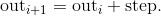
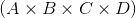
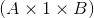

Tensors
torch.is_tensor(obj)
如果obj是一个PyTorch张量，则返回True.
| Parameters: | obj (Object) – Object to test |
|---|---|
torch.is_storage(obj)
如果obj是一个PyTorch 存储对象，则返回True.
| Parameters: | obj (Object) – Object to test |
|---|---|
torch.set_default_dtype(d)
将d设置为默认浮点类型(dtype). 该类型将在 torch.tensor() 中作为类型推断的默认浮点类型。初始默认浮点类型为torch.float32。
| Parameters: | d (torch.dtype) – 默认浮点类型 |
|---|---|
Example:
>>> torch.tensor([1.2, 3]).dtype # 初始默认浮点类型为 torch.float32
floating point is torch.float32
torch.float32
>>> torch.set_default_dtype(torch.float64)
>>> torch.tensor([1.2, 3]).dtype # 一个新的浮点类型的张量
torch.float64
torch.get_default_dtype() → torch.dtype
获取当前默认浮点类型 torch.dtype.
Example:
>>> torch.get_default_dtype() # 初始的默认浮点类型是 torch.float32
torch.float32
>>> torch.set_default_dtype(torch.float64)
>>> torch.get_default_dtype() # 默认浮点类型为 torch.float64
torch.float64
>>> torch.set_default_tensor_type(torch.FloatTensor) # 设置默认张量类型也会影响默认浮点类型
>>> torch.get_default_dtype() # 变化到 torch.float32( 此类型(dtype)来自于torch.FloatTensor )
torch.float32
torch.set_default_tensor_type(t)
设置默认的 torch.Tensor 类型到浮点张量类型 t. 该类型将在 torch.tensor() 中作为类型推断的默认浮点类型。
初始默认浮点张量类型为 torch.FloatTensor.
| Parameters: | t (type or string) – 浮点张量的类型或者它的名称 |
|---|---|
Example:
>>> torch.tensor([1.2, 3]).dtype # 初始默认浮点类型为 torch.float32
torch.float32
>>> torch.set_default_tensor_type(torch.DoubleTensor)
>>> torch.tensor([1.2, 3]).dtype # 一个新的浮点张量
torch.float64
torch.numel(input) → int
返回 input 张量中元素总数.
| Parameters: | input (Tensor) – the input tensor |
|---|---|
Example:
>>> a = torch.randn(1, 2, 3, 4, 5)
>>> torch.numel(a)
120
>>> a = torch.zeros(4,4)
>>> torch.numel(a)
16
torch.set_printoptions(precision=None, threshold=None, edgeitems=None, linewidth=None, profile=None)
设置打印选项. 从 NumPy 剽窃过来的(滑稽）
Parameters:
- precision – 浮点输出的有效位数 (默认为 4).
- threshold – 输出时的阈值，当数组元素总和超过阈值，会被截断输出 (默认为 1000).
- edgeitems – 每个维度所统计的数组条目数量(默认：3).
- linewidth – 每一行输出的字符长度 (默认为80). 阈值矩阵将忽略该参数.
- profile – 打印输出的美观程度 默认值为Sane. 可以用后面括号中的选项覆盖(
default,short,full).
torch.set_flush_denormal(mode) → bool
CPU不支持非规格化浮点数 .
如果你的系统支持非规格化数字模式(flush denormal mode)并且可成功配置该模式则返回 True . set_flush_denormal() 可以使用在支持SSE3的x86架构.
| Parameters: | mode (bool) – 是否开启 flush denormal mode |
|---|---|
Example:
>>> torch.set_flush_denormal(True)
True
>>> torch.tensor([1e-323], dtype=torch.float64)
tensor([ 0.], dtype=torch.float64)
>>> torch.set_flush_denormal(False)
True
>>> torch.tensor([1e-323], dtype=torch.float64)
tensor(9.88131e-324 *
[ 1.0000], dtype=torch.float64)
Creation Ops
Note
随机采样创造随机数的方式在 Random sampling 列举。其中包括 torch.rand() torch.rand_like() torch.randn() torch.randn_like() torch.randint() torch.randint_like() torch.randperm() . 你可以使用 torch.empty() ，并使用 In-place random sampling 方法去从更宽泛的范围采样,生成 torch.Tensor .
torch.tensor(data, dtype=None, device=None, requires_grad=False) → Tensor
用 data 构建张量.
Warning
torch.tensor() 会拷贝 data. 如果你有一个张量( data )，并且想要避免拷贝, 请使用 torch.Tensor.requires_grad_() 或者 torch.Tensor.detach(). 如果你有一个NumPy数组(ndarray) 并且想要避免拷贝, 请使用 torch.from_numpy().
Warning
当 data 为一个名为 x 的张量， torch.tensor() 读取 'the data' (无论传输了什么), 都会构建一个 leaf variable(计算图模型中事先创建的、而非运算得到的变量). 因此 torch.tensor(x) 等价于 x.clone().detach() ，同时 torch.tensor(x, requires_grad=True) 等价于 x.clone().detach().requires_grad_(True). 我们推荐这种使用 clone() and detach() 的写法.
Parameters:
- data (array_like) – 初始化张量的数据. 允许的类型有 list, tuple, NumPy
ndarray, scalar(标量), 以及其他类型. - dtype (
torch.dtype, optional) – 返回的张量所要求的数据类型. 默认: 如果此参数为None,从data中推断数据类型. - device (
torch.device, optional) – 返回的张量所要求的硬件. 默认: 如果此参数为None,对当前张量类型使用当前硬件(参考torch.set_default_tensor_type()).device可以为 提供CPU张量类型的CPU和 支持CUDA张量类型的CUDA设备. - requires_grad (bool, optional) – 对返回的张量自动求导时是否需要记录操作. 默认:
False.
Example:
>>> torch.tensor([[0.1, 1.2], [2.2, 3.1], [4.9, 5.2]])
tensor([[ 0.1000, 1.2000],
[ 2.2000, 3.1000],
[ 4.9000, 5.2000]])
>>> torch.tensor([0, 1]) # 输入数据推断
tensor([ 0, 1])
>>> torch.tensor([[0.11111, 0.222222, 0.3333333]],
dtype=torch.float64,
device=torch.device('cuda:0')) # 创建一个 torch.cuda.DoubleTensor
tensor([[ 0.1111, 0.2222, 0.3333]], dtype=torch.float64,
device='cuda:0')
>>> torch.tensor(3.14159) # 创建一个标量 (零维张量)
tensor(3.1416)
>>> torch.tensor([]) # 创建一个空张量 (形状是 (0,))
tensor([])
torch.sparse_coo_tensor(indices, values, size=None, dtype=None, device=None, requires_grad=False) → Tensor
用非0元素值values和下标indices在COO(顺序标注)构建一个稀疏矩阵。一个稀疏向量可以是未合并的(uncoalesced), 在这种情况下,在索引中会存在有重复坐标 ,这个索引的值是所有重复值数量的和: torch.sparse.
Parameters:
- indices (array_like) – 给张量初始化数据。可以是列表,元组,Numpy矩阵(
ndarry类型),标量和其他类型。之后将在内部被映射成torch.LongTensor。 因此矩阵中的非零元素下标的坐标,需要是二维的，并且第一维是张量的维度，第二维是非零元素数量。 - values (array_like) – 初始化张量的值。可以是列表,元组,Numpy矩阵(
ndarry类型),标量和其他类型。 - size (list, tuple, or
torch.Size, optional) – 稀疏矩阵的形状。如果不提供size形状，将会被自动优化为可以装下所有非零元素的最小大小。 - dtype (
torch.dtype, optional) – 张量返回值的期望数据类型。如果没有，则默认为values。 - device (
torch.device, optional) – 返回的张量所要求的硬件. 默认: 如果此参数为None,对当前张量类型使用当前硬件(参考torch.set_default_tensor_type()).device可以为 提供CPU张量类型的CPU和 支持CUDA张量类型的CUDA设备.torch.set_default_tensor_type "torch.set_default_tensor_type")).devicewill be the CPU for CPU tensor types and the current CUDA device for CUDA tensor types. - requires_grad (bool, optional) – 对返回的张量自动求导时是否需要记录操作. 默认:
False.
Example:
>>> i = torch.tensor([[0, 1, 1],
[2, 0, 2]])
>>> v = torch.tensor([3, 4, 5], dtype=torch.float32)
>>> torch.sparse_coo_tensor(i, v, [2, 4])
tensor(indices=tensor([[0, 1, 1],
[2, 0, 2]]),
values=tensor([3., 4., 5.]),
size=(2, 4), nnz=3, layout=torch.sparse_coo)
>>> torch.sparse_coo_tensor(i, v) # Shape inference
tensor(indices=tensor([[0, 1, 1],
[2, 0, 2]]),
values=tensor([3., 4., 5.]),
size=(2, 3), nnz=3, layout=torch.sparse_coo)
>>> torch.sparse_coo_tensor(i, v, [2, 4],
dtype=torch.float64,
device=torch.device('cuda:0'))
tensor(indices=tensor([[0, 1, 1],
[2, 0, 2]]),
values=tensor([3., 4., 5.]),
device='cuda:0', size=(2, 4), nnz=3, dtype=torch.float64,
layout=torch.sparse_coo)
# 使用下列常量创建一个空稀疏张量:
# 1\. sparse_dim + dense_dim = len(SparseTensor.shape)
# 2\. SparseTensor._indices().shape = (sparse_dim, nnz)
# 3\. SparseTensor._values().shape = (nnz, SparseTensor.shape[sparse_dim:])
#
# 比如，使用nnz = 0, dense_dim = 0和
# sparse_dim = 1 (这里的下标是一个二维张量形状shape = (1, 0)) 来创建一个空稀疏矩阵
>>> S = torch.sparse_coo_tensor(torch.empty([1, 0]), [], [1])
tensor(indices=tensor([], size=(1, 0)),
values=tensor([], size=(0,)),
size=(1,), nnz=0, layout=torch.sparse_coo)
# 然后使用nnz = 0, dense_dim = 1 和 sparse_dim = 1
# 来创建一个空稀疏矩阵
>>> S = torch.sparse_coo_tensor(torch.empty([1, 0]), torch.empty([0, 2]), [1, 2])
tensor(indices=tensor([], size=(1, 0)),
values=tensor([], size=(0, 2)),
size=(1, 2), nnz=0, layout=torch.sparse_coo)
torch.as_tensor(data, dtype=None, device=None) → Tensor
转换 data 到 torch.Tensor 类型. 如果 data 已经是相同 dtype 和 device 的张量， 那就不会执行拷贝，否则将会返回一个新的张量(如果 data Tensor 中 requires_grad=True,则返回的张量计算图会被保留)相似地，如果 data dtype 为 ndarry 并且 device 为CPU，则拷贝不会发生。
Parameters:
- data (array_like) – 提供张量初始化的数据结构。可能是ist, tuple, NumPy
ndarray, scalar 或其他类型。 - dtype (
torch.dtype, optional) – 提供张量初始化的值。可能是ist, tuple, NumPyndarray, scalar 或其他类型。 - device (
torch.device, optional) – 返回张量所需要的设备。默认：若为空，则当前的设备提供给默认张量类型(seetorch.set_default_tensor_type()).device将为支持CPU张量的CPU和支持CUDA张量类型的CUDA设备。
Example:
>>> a = numpy.array([1, 2, 3])
>>> t = torch.as_tensor(a)
>>> t
tensor([ 1, 2, 3])
>>> t[0] = -1
>>> a
array([-1, 2, 3])
>>> a = numpy.array([1, 2, 3])
>>> t = torch.as_tensor(a, device=torch.device('cuda'))
>>> t
tensor([ 1, 2, 3])
>>> t[0] = -1
>>> a
array([1, 2, 3])
torch.from_numpy(ndarray) → Tensor
从一个 numpy.ndarray 创建一个 Tensor.
返回的张量和 ndarry 共享相同的内存。 对张量的修饰将会反映在 ndarry，反之亦然。返回的张量 大小不可变。
Example:
>>> a = numpy.array([1, 2, 3])
>>> t = torch.from_numpy(a)
>>> t
tensor([ 1, 2, 3])
>>> t[0] = -1
>>> a
array([-1, 2, 3])
torch.zeros(*sizes, out=None, dtype=None, layout=torch.strided, device=None, requires_grad=False) → Tensor
返回一个用标量 0 填充的张量，其中可变长参数 sizes 定义了该张量形状(shape).
Parameters:
- sizes (int...) – 定义输出张量形状的整数序列. 可以是可变长的参数 或者是像 列表元组这样的集合。
- out (Tensor, optional) – 输出张量
- dtype (
torch.dtype, optional) – 返回张量的数据类型. 默认: 如果为None, 使用全局默认值 (参考torch.set_default_tensor_type()). - layout (
torch.layout, optional) – 返回张量的层数. Default:torch.strided. -
TODO
- device (
torch.device, optional) – 返回张量所需的设备. 默认: 如果为None, 则当前的设备提供给默认张量类型(seetorch.set_default_tensor_type()).device将为支持CPU张量的CPU和支持CUDA张量类型的CUDA设备。 - requires_grad (bool, optional) – 自动梯度计算是否需要记录在返回张量上的操作。默认:
False.
Example:
>>> torch.zeros(2, 3)
tensor([[ 0., 0., 0.],
[ 0., 0., 0.]])
>>> torch.zeros(5)
tensor([ 0., 0., 0., 0., 0.])
torch.zeros_like(input, dtype=None, layout=None, device=None, requires_grad=False) → Tensor
返回用标量0填充的张量，大小和input的size一样. torch.zeros_like(input) 等价于 torch.zeros(input.size(), dtype=input.dtype, layout=input.layout, device=input.device).
Warning
截止到 0.4, 该函数不再支持out关键字. 同时，老版的 torch.zeros_like(input, out=output) 等价于 torch.zeros(input.size(), out=output).
Parameters:
- input (Tensor) –
input的size属性决定输出张量大小 - dtype (
torch.dtype, optional) – 返回张量的数据类型. 默认: 如果为None, 使用input的dtype属性 . - layout (
torch.layout, optional) – 返回张量的层数. Default: 默认为input的layout属性. - device (
torch.device, optional) – 返回张量所需的设备. 默认: 如果为None, 则为input的device属性. - requires_grad (bool, optional) – 自动梯度计算是否需要记录在返回张量上的操作。默认:
False.
Example:
>>> input = torch.empty(2, 3)
>>> torch.zeros_like(input)
tensor([[ 0., 0., 0.],
[ 0., 0., 0.]])
torch.ones(*sizes, out=None, dtype=None, layout=torch.strided, device=None, requires_grad=False) → Tensor
返回一个用标量 1 填充的张量，其中可变长参数 sizes 定义了该张量形状(shape).
Parameters:
- sizes (int...) – 定义输出张量形状的整数序列. 可以是可变长的参数 或者是像 列表元组这样的集合。
- out (Tensor, optional) – 输出张量
- dtype (
torch.dtype, optional) – 返回张量的数据类型. 默认: 如果为None, 使用全局默认值 (参考torch.set_default_tensor_type()). - layout (
torch.layout, optional) – 返回张量的层数. Default:torch.strided. - device (
torch.device, optional) – 返回张量所需的设备. 默认: 如果为None, 则当前的设备提供给默认张量类型(seetorch.set_default_tensor_type()).device将为支持CPU张量的CPU和支持CUDA张量类型的CUDA设备。 - requires_grad (bool, optional) – 自动梯度计算是否需要记录在返回张量上的操作。默认:
False.
Example:
>>> torch.ones(2, 3)
tensor([[ 1., 1., 1.],
[ 1., 1., 1.]])
>>> torch.ones(5)
tensor([ 1., 1., 1., 1., 1.])
torch.ones_like(input, dtype=None, layout=None, device=None, requires_grad=False) → Tensor
返回用标量1填充的张量，大小和input的size一样. torch.ones_like(input) 等价于 torch.ones(input.size(), dtype=input.dtype, layout=input.layout, device=input.device)
Warning
截止到 0.4, 该函数不再支持out关键字. 同时，老版的 torch.ones_like(input, out=output) 等价于 torch.ones(input.size(), out=output).
Parameters:
- input (Tensor) –
input的size属性决定输出张量大小 - dtype (
torch.dtype, optional) – 返回张量的数据类型. 默认: 如果为None, 使用input的dtype属性 . - layout (
torch.layout, optional) – 返回张量的层数. Default: 默认为input的layout属性. - device (
torch.device, optional) – 返回张量所需的设备. 默认: 如果为None, 则为input的device属性. - requires_grad (bool, optional) – 自动梯度计算是否需要记录在返回张量上的操作。默认:
False.
Example:
>>> input = torch.empty(2, 3)
>>> torch.ones_like(input)
tensor([[ 1., 1., 1.],
[ 1., 1., 1.]])
torch.arange(start=0, end, step=1, out=None, dtype=None, layout=torch.strided, device=None, requires_grad=False) → Tensor
返回一个一维张量，大小为 ，值为区间
，值为区间 [start,end)内，以step为步距,从start开始的数列.
注意: 非整型数 step 和 end 比较时存在浮点四舍五入误差;为避免不一致，建议在end后面加上一个小的epsilon.

Parameters:
- start (Number) – 点集的起始值. 默认为
0. - end (Number) – 点集的终值.
- step (Number) – 每对相邻点之间的距离 . 默认为
1. - out (Tensor, optional) – 输出的张量
- dtype (
torch.dtype, optional) – 返回张量的数据类型. 默认: 如果为None, 使用全局默认值. (参考torch.set_default_tensor_type()). 若dtype未提供, 则从其他输入参数推断数据类型. 如果start,end,stop中存在浮点数, 则dtype会使用默认数据类型, 请查看get_default_dtype(). 否则,dtype会使用torch.int64. - layout (
torch.layout, optional) – 返回张量的层数. Default:torch.strided. - device (
torch.device, optional) – 返回张量所需的设备. 默认: 如果为None, 则当前的设备提供给默认张量类型(seetorch.set_default_tensor_type()).device将为支持CPU张量的CPU和支持CUDA张量类型的CUDA设备。 - requires_grad (bool, optional) – 自动梯度计算是否需要记录在返回张量上的操作。默认:
False.
Example:
>>> torch.arange(5)
tensor([ 0, 1, 2, 3, 4])
>>> torch.arange(1, 4)
tensor([ 1, 2, 3])
>>> torch.arange(1, 2.5, 0.5)
tensor([ 1.0000, 1.5000, 2.0000])
torch.range(start=0, end, step=1, out=None, dtype=None, layout=torch.strided, device=None, requires_grad=False) → Tensor
返回一个一维张量，大小为 ，值从
，值从start到end，以step为步距的数列.

Warning
这个函数被弃用，改为 torch.arange().
Parameters:
- start (Number) – 点集的起始值. 默认为
0. - end (Number) – 点集的终值.
- step (Number) – 每对相邻点之间的距离 . 默认为
1. - out (Tensor, optional) – 输出的张量
- dtype (
torch.dtype, optional) – 返回张量的数据类型. 默认: 如果为None, 使用全局默认值. (参考torch.set_default_tensor_type()). 若dtype未提供, 则从其他输入参数推断数据类型. 如果start,end,stop中存在浮点数, 则dtype会使用默认数据类型, 请查看get_default_dtype(). 否则,dtype会使用torch.int64. - layout (
torch.layout, optional) – 返回张量的层数. Default:torch.strided. - device (
torch.device, optional) – 返回张量所需的设备. 默认: 如果为None, 则当前的设备提供给默认张量类型(seetorch.set_default_tensor_type()).device将为支持CPU张量的CPU和支持CUDA张量类型的CUDA设备。 - requires_grad (bool, optional) – 自动梯度计算是否需要记录在返回张量上的操作。默认:
False.
Example:
>>> torch.range(1, 4)
tensor([ 1., 2., 3., 4.])
>>> torch.range(1, 4, 0.5)
tensor([ 1.0000, 1.5000, 2.0000, 2.5000, 3.0000, 3.5000, 4.0000])
torch.linspace(start, end, steps=100, out=None, dtype=None, layout=torch.strided, device=None, requires_grad=False) → Tensor
返回共steps数量在start 和 end之间的等距点，从而组成的一维张量.
输出张量大小为steps，维度为一维.
Parameters:
- start (float) – 点集的起始值.
- end (float) –点集的终值.
- steps (int) –
start和end之间的样本点数目. 默认:100. - out (Tensor, optional) – 输出张量
- dtype (
torch.dtype, optional) – 返回张量的数据类型. 默认: 如果为None, 使用全局默认值. (参考torch.set_default_tensor_type()). - layout (
torch.layout, optional) – 返回张量的层数. Default:torch.strided. - device (
torch.device, optional) – 返回张量所需的设备. 默认: 如果为None, 则当前的设备提供给默认张量类型(seetorch.set_default_tensor_type()).device将为支持CPU张量的CPU和支持CUDA张量类型的CUDA设备。 - requires_grad (bool, optional) – 自动梯度计算是否需要记录在返回张量上的操作。默认:
False.
Example:
>>> torch.linspace(3, 10, steps=5)
tensor([ 3.0000, 4.7500, 6.5000, 8.2500, 10.0000])
>>> torch.linspace(-10, 10, steps=5)
tensor([-10., -5., 0., 5., 10.])
>>> torch.linspace(start=-10, end=10, steps=5)
tensor([-10., -5., 0., 5., 10.])
torch.logspace(start, end, steps=100, out=None, dtype=None, layout=torch.strided, device=None, requires_grad=False) → Tensor
返回共有steps数量的一维张量，点集由 和
和  之间对数分布的点组成.
之间对数分布的点组成.
输出张量大小为steps，维度为一维.
Parameters:
- start (float) – 点集的起始值.
- end (float) –点集的终值.
- steps (int) –
start和end之间的样本点数目. 默认:100. - out (Tensor, optional) – 输出张量
- dtype (
torch.dtype, optional) – 返回张量的数据类型. 默认: 如果为None, 使用全局默认值. (参考torch.set_default_tensor_type()). - layout (
torch.layout, optional) – 返回张量的层数. Default:torch.strided. - device (
torch.device, optional) – 返回张量所需的设备. 默认: 如果为None, 则当前的设备提供给默认张量类型(seetorch.set_default_tensor_type()).device将为支持CPU张量的CPU和支持CUDA张量类型的CUDA设备。 - requires_grad (bool, optional) – 自动梯度计算是否需要记录在返回张量上的操作。默认:
False.
Example:
>>> torch.logspace(start=-10, end=10, steps=5)
tensor([ 1.0000e-10, 1.0000e-05, 1.0000e+00, 1.0000e+05, 1.0000e+10])
>>> torch.logspace(start=0.1, end=1.0, steps=5)
tensor([ 1.2589, 2.1135, 3.5481, 5.9566, 10.0000])
torch.eye(n, m=None, out=None, dtype=None, layout=torch.strided, device=None, requires_grad=False) → Tensor
返回二维张量，对角线上是1，其它地方是0.
Parameters:
- n (int) – the number of rows
- m (int, optional) – the number of columns with default being
n - out (Tensor, optional) – the output tensor
- dtype (
torch.dtype, optional) – the desired data type of returned tensor. Default: ifNone, uses a global default (seetorch.set_default_tensor_type()). - layout (
torch.layout, optional) – the desired layout of returned Tensor. Default:torch.strided. - device (
torch.device, optional) – the desired device of returned tensor. Default: ifNone, uses the current device for the default tensor type (seetorch.set_default_tensor_type()).devicewill be the CPU for CPU tensor types and the current CUDA device for CUDA tensor types. - requires_grad (bool, optional) – If autograd should record operations on the returned tensor. Default:
False.
| Returns: | A 2-D tensor with ones on the diagonal and zeros elsewhere |
|---|---|
| Return type: | Tensor |
| --- | --- |
Example:
>>> torch.eye(3)
tensor([[ 1., 0., 0.],
[ 0., 1., 0.],
[ 0., 0., 1.]])
torch.empty(*sizes, out=None, dtype=None, layout=torch.strided, device=None, requires_grad=False) → Tensor
Returns a tensor filled with uninitialized data. The shape of the tensor is defined by the variable argument sizes.
Parameters:
- sizes (int...) – a sequence of integers defining the shape of the output tensor. Can be a variable number of arguments or a collection like a list or tuple.
- out (Tensor, optional) – the output tensor
- dtype (
torch.dtype, optional) – the desired data type of returned tensor. Default: ifNone, uses a global default (seetorch.set_default_tensor_type()). - layout (
torch.layout, optional) – the desired layout of returned Tensor. Default:torch.strided. - device (
torch.device, optional) – the desired device of returned tensor. Default: ifNone, uses the current device for the default tensor type (seetorch.set_default_tensor_type()).devicewill be the CPU for CPU tensor types and the current CUDA device for CUDA tensor types. - requires_grad (bool, optional) – If autograd should record operations on the returned tensor. Default:
False.
Example:
>>> torch.empty(2, 3)
tensor(1.00000e-08 *
[[ 6.3984, 0.0000, 0.0000],
[ 0.0000, 0.0000, 0.0000]])
torch.empty_like(input, dtype=None, layout=None, device=None, requires_grad=False) → Tensor
Returns an uninitialized tensor with the same size as input. torch.empty_like(input) is equivalent to torch.empty(input.size(), dtype=input.dtype, layout=input.layout, device=input.device).
Parameters:
- input (Tensor) – the size of
inputwill determine size of the output tensor - dtype (
torch.dtype, optional) – the desired data type of returned Tensor. Default: ifNone, defaults to the dtype ofinput. - layout (
torch.layout, optional) – the desired layout of returned tensor. Default: ifNone, defaults to the layout ofinput. - device (
torch.device, optional) – the desired device of returned tensor. Default: ifNone, defaults to the device ofinput. - requires_grad (bool, optional) – If autograd should record operations on the returned tensor. Default:
False.
Example:
>>> torch.empty((2,3), dtype=torch.int64)
tensor([[ 9.4064e+13, 2.8000e+01, 9.3493e+13],
[ 7.5751e+18, 7.1428e+18, 7.5955e+18]])
torch.full(size, fill_value, out=None, dtype=None, layout=torch.strided, device=None, requires_grad=False) → Tensor
Returns a tensor of size size filled with fill_value.
Parameters:
- size (int...) – a list, tuple, or
torch.Sizeof integers defining the shape of the output tensor. - fill_value – the number to fill the output tensor with.
- out (Tensor, optional) – the output tensor
- dtype (
torch.dtype, optional) – the desired data type of returned tensor. Default: ifNone, uses a global default (seetorch.set_default_tensor_type()). - layout (
torch.layout, optional) – the desired layout of returned Tensor. Default:torch.strided. - device (
torch.device, optional) – the desired device of returned tensor. Default: ifNone, uses the current device for the default tensor type (seetorch.set_default_tensor_type()).devicewill be the CPU for CPU tensor types and the current CUDA device for CUDA tensor types. - requires_grad (bool, optional) – If autograd should record operations on the returned tensor. Default:
False.
Example:
>>> torch.full((2, 3), 3.141592)
tensor([[ 3.1416, 3.1416, 3.1416],
[ 3.1416, 3.1416, 3.1416]])
torch.full_like(input, fill_value, out=None, dtype=None, layout=torch.strided, device=None, requires_grad=False) → Tensor
Returns a tensor with the same size as input filled with fill_value. torch.full_like(input, fill_value) is equivalent to torch.full_like(input.size(), fill_value, dtype=input.dtype, layout=input.layout, device=input.device).
Parameters:
- input (Tensor) – the size of
inputwill determine size of the output tensor - fill_value – the number to fill the output tensor with.
- dtype (
torch.dtype, optional) – the desired data type of returned Tensor. Default: ifNone, defaults to the dtype ofinput. - layout (
torch.layout, optional) – the desired layout of returned tensor. Default: ifNone, defaults to the layout ofinput. - device (
torch.device, optional) – the desired device of returned tensor. Default: ifNone, defaults to the device ofinput. - requires_grad (bool, optional) – If autograd should record operations on the returned tensor. Default:
False.
Indexing, Slicing, Joining, Mutating Ops
torch.cat(tensors, dim=0, out=None) → Tensor
Concatenates the given sequence of seq tensors in the given dimension. All tensors must either have the same shape (except in the concatenating dimension) or be empty.
torch.cat() can be seen as an inverse operation for torch.split() and torch.chunk().
torch.cat() can be best understood via examples.
Parameters:
- tensors (sequence of Tensors) – any python sequence of tensors of the same type. Non-empty tensors provided must have the same shape, except in the cat dimension.
- dim (int, optional) – the dimension over which the tensors are concatenated
- out (Tensor, optional) – the output tensor
Example:
>>> x = torch.randn(2, 3)
>>> x
tensor([[ 0.6580, -1.0969, -0.4614],
[-0.1034, -0.5790, 0.1497]])
>>> torch.cat((x, x, x), 0)
tensor([[ 0.6580, -1.0969, -0.4614],
[-0.1034, -0.5790, 0.1497],
[ 0.6580, -1.0969, -0.4614],
[-0.1034, -0.5790, 0.1497],
[ 0.6580, -1.0969, -0.4614],
[-0.1034, -0.5790, 0.1497]])
>>> torch.cat((x, x, x), 1)
tensor([[ 0.6580, -1.0969, -0.4614, 0.6580, -1.0969, -0.4614, 0.6580,
-1.0969, -0.4614],
[-0.1034, -0.5790, 0.1497, -0.1034, -0.5790, 0.1497, -0.1034,
-0.5790, 0.1497]])
torch.chunk(tensor, chunks, dim=0) → List of Tensors
Splits a tensor into a specific number of chunks.
Last chunk will be smaller if the tensor size along the given dimension dim is not divisible by chunks.
Parameters:
- tensor (Tensor) – the tensor to split
- chunks (int) – number of chunks to return
- dim (int) – dimension along which to split the tensor
torch.gather(input, dim, index, out=None) → Tensor
Gathers values along an axis specified by dim.
For a 3-D tensor the output is specified by:
out[i][j][k] = input[index[i][j][k]][j][k] # if dim == 0
out[i][j][k] = input[i][index[i][j][k]][k] # if dim == 1
out[i][j][k] = input[i][j][index[i][j][k]] # if dim == 2
If input is an n-dimensional tensor with size  and
and dim = i, then index must be an  -dimensional tensor with size
-dimensional tensor with size  where
where  and
and out will have the same size as index.
Parameters:
- input (Tensor) – the source tensor
- dim (int) – the axis along which to index
- index (LongTensor) – the indices of elements to gather
- out (Tensor, optional) – the destination tensor
Example:
>>> t = torch.tensor([[1,2],[3,4]])
>>> torch.gather(t, 1, torch.tensor([[0,0],[1,0]]))
tensor([[ 1, 1],
[ 4, 3]])
torch.index_select(input, dim, index, out=None) → Tensor
Returns a new tensor which indexes the input tensor along dimension dim using the entries in index which is a LongTensor.
The returned tensor has the same number of dimensions as the original tensor (input). The dimth dimension has the same size as the length of index; other dimensions have the same size as in the original tensor.
Note
The returned tensor does not use the same storage as the original tensor. If out has a different shape than expected, we silently change it to the correct shape, reallocating the underlying storage if necessary.
Parameters:
- input (Tensor) – the input tensor
- dim (int) – the dimension in which we index
- index (LongTensor) – the 1-D tensor containing the indices to index
- out (Tensor, optional) – the output tensor
Example:
>>> x = torch.randn(3, 4)
>>> x
tensor([[ 0.1427, 0.0231, -0.5414, -1.0009],
[-0.4664, 0.2647, -0.1228, -1.1068],
[-1.1734, -0.6571, 0.7230, -0.6004]])
>>> indices = torch.tensor([0, 2])
>>> torch.index_select(x, 0, indices)
tensor([[ 0.1427, 0.0231, -0.5414, -1.0009],
[-1.1734, -0.6571, 0.7230, -0.6004]])
>>> torch.index_select(x, 1, indices)
tensor([[ 0.1427, -0.5414],
[-0.4664, -0.1228],
[-1.1734, 0.7230]])
torch.masked_select(input, mask, out=None) → Tensor
Returns a new 1-D tensor which indexes the input tensor according to the binary mask mask which is a ByteTensor.
The shapes of the mask tensor and the input tensor don't need to match, but they must be broadcastable.
Note
The returned tensor does not use the same storage as the original tensor
Parameters:
- input (Tensor) – the input data
- mask (ByteTensor) – the tensor containing the binary mask to index with
- out (Tensor, optional) – the output tensor
Example:
>>> x = torch.randn(3, 4)
>>> x
tensor([[ 0.3552, -2.3825, -0.8297, 0.3477],
[-1.2035, 1.2252, 0.5002, 0.6248],
[ 0.1307, -2.0608, 0.1244, 2.0139]])
>>> mask = x.ge(0.5)
>>> mask
tensor([[ 0, 0, 0, 0],
[ 0, 1, 1, 1],
[ 0, 0, 0, 1]], dtype=torch.uint8)
>>> torch.masked_select(x, mask)
tensor([ 1.2252, 0.5002, 0.6248, 2.0139])
torch.narrow(input, dimension, start, length) → Tensor
Returns a new tensor that is a narrowed version of input tensor. The dimension dim is input from start to start + length. The returned tensor and input tensor share the same underlying storage.
Parameters:
- input (Tensor) – the tensor to narrow
- dimension (int) – the dimension along which to narrow
- start (int) – the starting dimension
- length (int) – the distance to the ending dimension
Example:
>>> x = torch.tensor([[1, 2, 3], [4, 5, 6], [7, 8, 9]])
>>> torch.narrow(x, 0, 0, 2)
tensor([[ 1, 2, 3],
[ 4, 5, 6]])
>>> torch.narrow(x, 1, 1, 2)
tensor([[ 2, 3],
[ 5, 6],
[ 8, 9]])
torch.nonzero(input, out=None) → LongTensor
Returns a tensor containing the indices of all non-zero elements of input. Each row in the result contains the indices of a non-zero element in input.
If input has n dimensions, then the resulting indices tensor out is of size  , where
, where  is the total number of non-zero elements in the
is the total number of non-zero elements in the input tensor.
Parameters:
- input (Tensor) – the input tensor
- out (LongTensor__, optional) – the output tensor containing indices
Example:
>>> torch.nonzero(torch.tensor([1, 1, 1, 0, 1]))
tensor([[ 0],
[ 1],
[ 2],
[ 4]])
>>> torch.nonzero(torch.tensor([[0.6, 0.0, 0.0, 0.0],
[0.0, 0.4, 0.0, 0.0],
[0.0, 0.0, 1.2, 0.0],
[0.0, 0.0, 0.0,-0.4]]))
tensor([[ 0, 0],
[ 1, 1],
[ 2, 2],
[ 3, 3]])
torch.reshape(input, shape) → Tensor
Returns a tensor with the same data and number of elements as input, but with the specified shape. When possible, the returned tensor will be a view of input. Otherwise, it will be a copy. Contiguous inputs and inputs with compatible strides can be reshaped without copying, but you should not depend on the copying vs. viewing behavior.
See torch.Tensor.view() on when it is possible to return a view.
A single dimension may be -1, in which case it's inferred from the remaining dimensions and the number of elements in input.
Parameters:
- input (Tensor) – the tensor to be reshaped
- shape (tuple of python:ints) – the new shape
Example:
>>> a = torch.arange(4.)
>>> torch.reshape(a, (2, 2))
tensor([[ 0., 1.],
[ 2., 3.]])
>>> b = torch.tensor([[0, 1], [2, 3]])
>>> torch.reshape(b, (-1,))
tensor([ 0, 1, 2, 3])
torch.split(tensor, split_size_or_sections, dim=0)
Splits the tensor into chunks.
If split_size_or_sections is an integer type, then tensor will be split into equally sized chunks (if possible). Last chunk will be smaller if the tensor size along the given dimension dim is not divisible by split_size.
If split_size_or_sections is a list, then tensor will be split into len(split_size_or_sections) chunks with sizes in dim according to split_size_or_sections.
Parameters:
- tensor (Tensor) – tensor to split.
- split_size_or_sections (int) or (list(int)) – size of a single chunk or list of sizes for each chunk
- dim (int) – dimension along which to split the tensor.
torch.squeeze(input, dim=None, out=None) → Tensor
Returns a tensor with all the dimensions of input of size 1 removed.
For example, if input is of shape:  then the
then the out tensor will be of shape: .
When dim is given, a squeeze operation is done only in the given dimension. If input is of shape: , squeeze(input, 0) leaves the tensor unchanged, but squeeze(input, 1) will squeeze the tensor to the shape  .
.
Note
The returned tensor shares the storage with the input tensor, so changing the contents of one will change the contents of the other.
Parameters:
- input (Tensor) – the input tensor
- dim (int, optional) – if given, the input will be squeezed only in this dimension
- out (Tensor, optional) – the output tensor
Example:
>>> x = torch.zeros(2, 1, 2, 1, 2)
>>> x.size()
torch.Size([2, 1, 2, 1, 2])
>>> y = torch.squeeze(x)
>>> y.size()
torch.Size([2, 2, 2])
>>> y = torch.squeeze(x, 0)
>>> y.size()
torch.Size([2, 1, 2, 1, 2])
>>> y = torch.squeeze(x, 1)
>>> y.size()
torch.Size([2, 2, 1, 2])
torch.stack(seq, dim=0, out=None) → Tensor
Concatenates sequence of tensors along a new dimension.
All tensors need to be of the same size.
Parameters:
- seq (sequence of Tensors) – sequence of tensors to concatenate
- dim (int) – dimension to insert. Has to be between 0 and the number of dimensions of concatenated tensors (inclusive)
- out (Tensor, optional) – the output tensor
torch.t(input) → Tensor
Expects input to be a matrix (2-D tensor) and transposes dimensions 0 and 1.
Can be seen as a short-hand function for transpose(input, 0, 1).
| Parameters: | input (Tensor) – the input tensor |
|---|---|
Example:
>>> x = torch.randn(2, 3)
>>> x
tensor([[ 0.4875, 0.9158, -0.5872],
[ 0.3938, -0.6929, 0.6932]])
>>> torch.t(x)
tensor([[ 0.4875, 0.3938],
[ 0.9158, -0.6929],
[-0.5872, 0.6932]])
torch.take(input, indices) → Tensor
Returns a new tensor with the elements of input at the given indices. The input tensor is treated as if it were viewed as a 1-D tensor. The result takes the same shape as the indices.
Parameters:
- input (Tensor) – the input tensor
- indices (LongTensor) – the indices into tensor
Example:
>>> src = torch.tensor([[4, 3, 5],
[6, 7, 8]])
>>> torch.take(src, torch.tensor([0, 2, 5]))
tensor([ 4, 5, 8])
torch.transpose(input, dim0, dim1) → Tensor
Returns a tensor that is a transposed version of input. The given dimensions dim0 and dim1 are swapped.
The resulting out tensor shares it's underlying storage with the input tensor, so changing the content of one would change the content of the other.
Parameters:
- input (Tensor) – the input tensor
- dim0 (int) – the first dimension to be transposed
- dim1 (int) – the second dimension to be transposed
Example:
>>> x = torch.randn(2, 3)
>>> x
tensor([[ 1.0028, -0.9893, 0.5809],
[-0.1669, 0.7299, 0.4942]])
>>> torch.transpose(x, 0, 1)
tensor([[ 1.0028, -0.1669],
[-0.9893, 0.7299],
[ 0.5809, 0.4942]])
torch.unbind(tensor, dim=0) → seq
Removes a tensor dimension.
Returns a tuple of all slices along a given dimension, already without it.
Parameters:
Example:
>>> torch.unbind(torch.tensor([[1, 2, 3],
>>> [4, 5, 6],
>>> [7, 8, 9]]))
(tensor([1, 2, 3]), tensor([4, 5, 6]), tensor([7, 8, 9]))
torch.unsqueeze(input, dim, out=None) → Tensor
Returns a new tensor with a dimension of size one inserted at the specified position.
The returned tensor shares the same underlying data with this tensor.
A dim value within the range [-input.dim() - 1, input.dim() + 1) can be used. Negative dim will correspond to unsqueeze() applied at dim = dim + input.dim() + 1.
Parameters:
- input (Tensor) – the input tensor
- dim (int) – the index at which to insert the singleton dimension
- out (Tensor, optional) – the output tensor
Example:
>>> x = torch.tensor([1, 2, 3, 4])
>>> torch.unsqueeze(x, 0)
tensor([[ 1, 2, 3, 4]])
>>> torch.unsqueeze(x, 1)
tensor([[ 1],
[ 2],
[ 3],
[ 4]])
torch.where(condition, x, y) → Tensor
Return a tensor of elements selected from either x or y, depending on condition.
The operation is defined as:

Note
The tensors condition, x, y must be broadcastable.
Parameters:
- condition (ByteTensor) – When True (nonzero), yield x, otherwise yield y
- x (Tensor) – values selected at indices where
conditionisTrue - y (Tensor) – values selected at indices where
conditionisFalse
| Returns: | A tensor of shape equal to the broadcasted shape of condition, x, y |
|---|---|
| Return type: | Tensor |
| --- | --- |
Example:
>>> x = torch.randn(3, 2)
>>> y = torch.ones(3, 2)
>>> x
tensor([[-0.4620, 0.3139],
[ 0.3898, -0.7197],
[ 0.0478, -0.1657]])
>>> torch.where(x > 0, x, y)
tensor([[ 1.0000, 0.3139],
[ 0.3898, 1.0000],
[ 0.0478, 1.0000]])